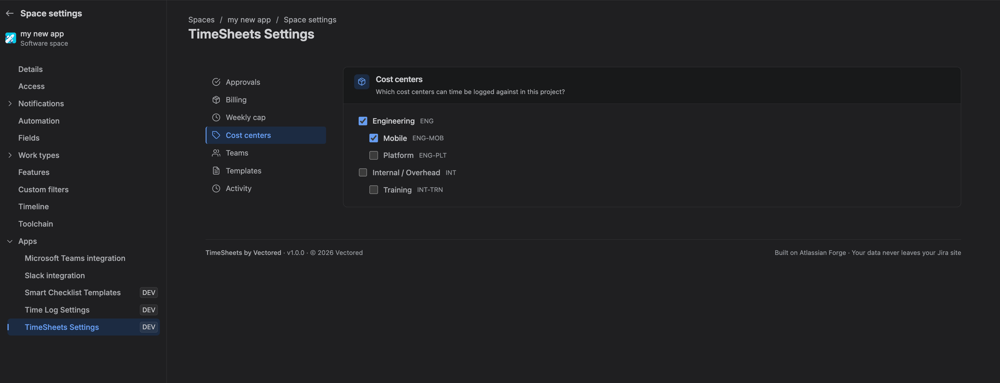
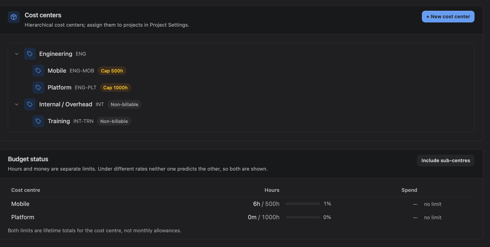

A cost centre is how work is classified once it has been logged. Every entry has exactly one. They are internal structure — the customer being billed is a separate concept, see Clients.
1. The cost centre tree
Cost centres are hierarchical: a parent such as *Delivery* can contain *Delivery — Implementation* and *Delivery — Support*. The hierarchy is for reporting and for rate inheritance; it does not by itself restrict who can log what.
Create and edit them under Admin Settings → Cost Centers.

| Field | What it does |
|---|---|
| Name | Shown wherever a cost centre is picked |
| Code | Optional short reference for your finance system |
| Parent | Optional. Used for rate inheritance and reporting rollup |
| Billable | Whether work here counts as billable by default |
| Max allotable hours | An optional lifetime hours limit |
| Budget | An optional money limit, with its own currency |
2. Assigning cost centres to projects
A cost centre only appears in the Log time dialog for projects it has been assigned to. Assign them under Project Settings.
A project with no cost centres cannot have time logged against it at all. This is the most common reason a project is missing from the Log time dialog.
Detaching a cost centre stops it being used for new entries. Existing entries keep their cost centre — history is never rewritten — but copying an old week or applying an old template will fail and tell you why.
3. Billable, and what it really means
The Billable flag is the default policy for new work. It decides whether hours land in the billable or non-billable bucket in reports.
Once work has been priced for billing, the answer to *was this billable* is frozen with it. Turning the flag off later changes what happens next; it does not restate what already happened. That distinction is deliberate — it is tolerable for a checkbox to reclassify hours, and not tolerable for it to silently restate money.
4. Hour allotments
Max allotable hours caps the total hours that can ever be logged against a cost centre. Leave it empty for no limit.
Two things about it are easy to get wrong, so they are stated plainly in the interface:
- It is a lifetime total, not a per-month allowance. There is no date window on it.
- It counts the cost centre on its own. Time logged to a child cost centre does not consume the parent's allotment.
5. Money budgets
A cost centre can also carry a money budget, in its own currency. This exists because hours and money genuinely come apart: a hundred hours of a junior and a hundred hours of a principal are the same capacity and very different cost. A team can be comfortably inside its hours allowance and far past its budget at the same moment.
Money budgets are visible to billing administrators only, and spend is measured from the priced snapshot of approved work — the same figures that reach an invoice.

6. Budget status and rollup
Budget status on the Cost Centers screen shows both limits as separate bars, because a single combined health score would have to pick a winner exactly when the two disagree — which is when you are looking at it.
Include sub-centres rolls children into the parent's totals. This is for information only: the limits that actually block time logging still count each cost centre on its own. Turning the display on does not tighten anything, and the screen says so.

7. Remaining balance
When you pick a cost centre with an allotment, the Log time dialog shows what is left. If a save would exceed it, the save is refused with the remaining figure — on the server as well as in the browser.
Where an allotment is empty, no limit is shown and none is applied.